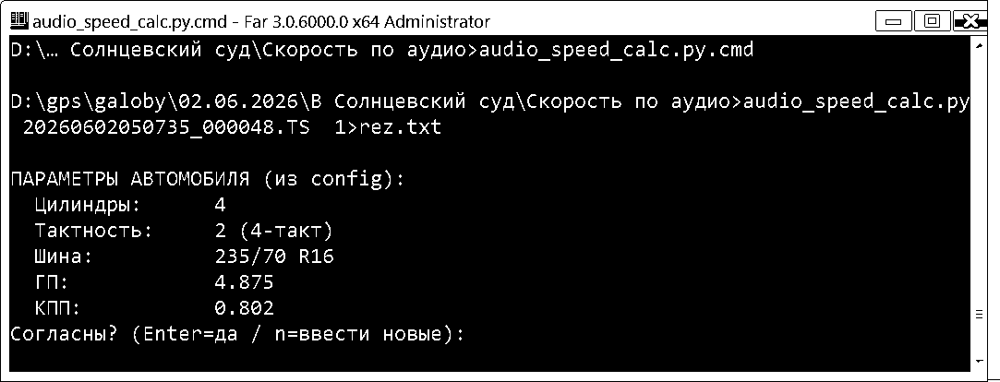
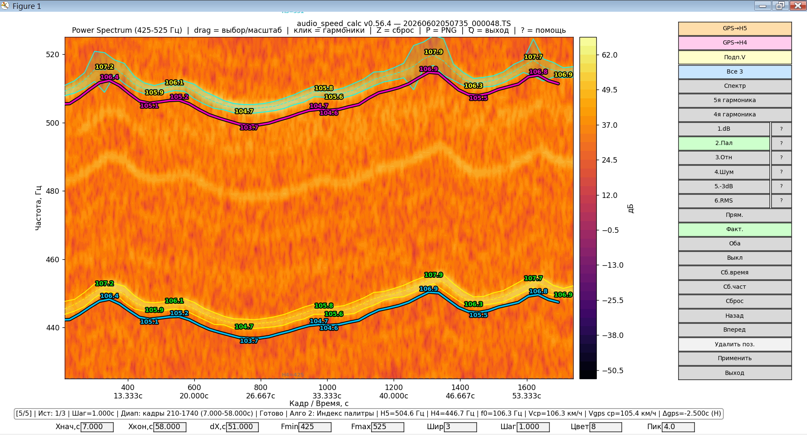

Определение скорости транспортного средства
по звукозаписям видеорегистратора
Программа audio_speed_calc предназначена для определения скорости движения транспортного средства (ТС) путём инструментального анализа звукового ряда видеофонограмм, полученных с автомобильных видеорегистраторов. Метод основан на выделении гармонических составляющих шума работающего двигателя внутреннего сгорания (ДВС) и последующем пересчёте частоты рабочего цикла двигателя в скорость движения ТС с учётом передаточных чисел трансмиссии и геометрических параметров шин.
Программа позволяет:
Микрофон видеорегистратора фиксирует акустические колебания, возникающие при работе ДВС. Наиболее выраженной гармонической составляющей является шум выпуска — периодический сигнал, частота которого равна частоте рабочего цикла двигателя.
Для четырёхтактного двигателя полный рабочий цикл (впуск, сжатие, рабочий ход, выпуск) совершается за два оборота коленчатого вала. Для двухтактного — за один оборот.
Частота вращения двигателя (об/мин):
где n — частота вращения коленчатого вала, об/мин;
f — частота рабочего цикла двигателя (гармоники), Гц;
k — количество цилиндров (для четырёхтактного двигателя).
Скорость движения ТС (км/ч):
где V — скорость, км/ч; rk —
радиус качения ведущих колёс, м; n — частота вращения
двигателя, об/мин; i0 — передаточное число
главной передачи; ik — передаточное число
включённой передачи КПП.
Радиус качения колеса (м):
где λ — коэффициент смятия шины (0,85–0,90 для
диагональных; 0,80–0,85 для радиальных); P — ширина
протектора шины, мм; H — профиль шины (высота в % от
ширины); R — посадочный диаметр, дюймы.
При наличии на видеофонограмме момента переключения передачи номер включённой передачи определяется по отношению частот:
Например, при переключении с I на II передачу частота гармоники меняется в 1,74–1,75 раза, что соответствует отношению передаточных чисел.
| Компонент | Версия | Назначение |
|---|---|---|
| Python | 3.8+ | Среда выполнения |
| ffmpeg | любая | Извлечение аудио из .ts |
| ffprobe | любая | Определение длительности |
| numpy | ≥1.20 | Математические вычисления |
| matplotlib | ≥3.4 | Визуализация |
| Компонент | Назначение |
|---|---|
| exiftool | Извлечение GPS-меток (альтернатива — встроенный парсер) |
| tkinter | Диалоговые окна (обычно входит в Python) |
pip install -r requirements.txtСодержимое requirements.txt:
numpy>=1.20
matplotlib>=3.4ffmpeg.exe и ffprobe.exe
в папку bin\ рядом со скриптом.sudo apt install ffmpeg libimage-exiftool-perl python3-tksudo dnf install ffmpeg perl-Image-ExifTool python3-tkinterbrew install ffmpeg exiftool python-tkpython audio_speed_calc.py --helpЗатем запустите программу на тестовом файле. В консоли появится запрос параметров автомобиля (рис. 1).

1>rez.txt
перенаправляет весь текстовый вывод в файл rez.txt —
удобно для последующего анализа отчёта без прокрутки консоли.
Совет. Параметры автомобиля считываются
из <base>_config.json. Если значения верны,
нажмите Enter — программа продолжит работу. Если нужны
другие параметры, нажмите n и введите их вручную.
Введённые значения действуют только в текущей сессии;
для сохранения в файл — клавиша S в окне программы.
Базовая команда запуска:
python audio_speed_calc.py путь/к/файлу.TSДля сохранения всего текстового вывода в файл (удобно для судебной практики — отчёт формируется автоматически):
python audio_speed_calc.py путь/к/файлу.TS 1>rez.txtПри первом запуске (см. рис. 1):
1.dB …
6.RMS или клавишу 1–6).Общий вид главного окна программы в момент, когда расчёт уже выполнен, показан на рис. 2.

Основные зоны окна:
| Зона | Что показывает |
|---|---|
| Заголовок | Версия программы и имя текущего .ts-файла. |
| Заголовок графика | Режим (Power Spectrum или
Спектрограмма), активный диапазон частот,
список горячих клавиш. |
| Спектрограмма | Цветовая карта интенсивности звука. По оси Y — частота (Гц), по оси X — кадры и время (с). Поверх — линии гармоник и «трубы» min/max. |
| Colorbar (справа от карты) | Шкала в дБ от −50.5 до 62.0. Помогает оценить порог, при котором выделяются границы. |
| Правая панель кнопок | Все команды: наложение GPS, выбор гармоник, алгоритмы, режимы оверлея, навигация по истории, выход. |
| Статусная строка | Текущий шаг, позиция в истории, шаг расчёта, диапазон анализа, алгоритм, частоты H5/H4, f0, скорости Vср и Vgps ср, Δgps. |
| Нижняя строка ввода | Поля: Xнач, Xкон, dX,
Fmin, Fmax, Шир,
Шаг, Цвет, Пик. |
| Toolbar matplotlib | Стандартные кнопки навигации. Дискета перехвачена — вызывает сохранение PNG со штампом. |
Разбор примера с рис. 2.
Спектр
в положении power).(H) —
калибровка взята из истории (см. раздел 6.4).| Элемент | Действие |
|---|---|
Спектр |
Переключение режима time/power |
5я / 4я гармоника |
Режим выбора гармоник |
1.dB … 6.RMS |
Запуск алгоритма анализа |
GPS→H5 / GPS→H4 |
Наложение GPS-скорости |
Подп.V |
Подписи пиков скорости |
Все 3 |
Включить/выключить все три верхние кнопки разом |
Применить (A) |
Зафиксировать правки в истории |
Назад / Вперёд |
Навигация по истории |
| Клавиша | Действие |
|---|---|
| A | Применить правки (Apply) |
| Z | Шаг назад по истории |
| Shift+Z | Общий сброс |
| S | Сохранить конфиг + PNG |
| P | Сохранить PNG |
| Q | Выход |
| 1–6 | Запуск алгоритма |
| ? | Справка |
Программа использует Apply-модель работы с историей:
Ист: N/M * показывает наличие
неприменённых правок.Маркер неприменённых правок * хорошо виден
в статусной строке на рис. 2 — например, запись
Ист: 1/3 без звёздочки означает, что текущее состояние
уже зафиксировано в истории (запись №1 из 3).
Внимание. Если вы изменили диапазон/гармоники и нажали «Назад» без применения, программа спросит: «Применить изменения? Да / Нет / Отмена».
.ts-файла
через ffmpeg.| Алгоритм | Метод |
|---|---|
| 1.dB | Абсолютный порог в dB |
| 2.Пал | Индекс палитры |
| 3.Отн | Относительный от пика |
| 4.Шум | Адаптивный от шума |
| 5.-3dB | Половинная мощность |
| 6.RMS | RMS-интегрирование |
Если в видеофайле содержатся GPS-метки, программа:
exiftool -ee3 -n.| Версия | Изменения |
|---|---|
| 0.56.3 | Apply-модель истории, маркер неприменённых правок |
| 0.56.2 | Исправление навигации по истории |
| 0.56.1 | Калибровка dGPS по длинному интервалу |
| 0.56.0 | Убрано автосохранение, перехват floppy disk |
| 0.55.9 | Калибровка GPS-кривых по реальному треку |
| 0.55.3 | Выравнивание GPS-графика по шкале времени аудио |
| 0.55.2 | Критическое исправление знака GPS-лага |
| 0.55.0 | Обрезка краёв FFT, единое сглаживание |
| 0.54.0 | Поиск лага по окну анализа |
| 0.53.0 | Кнопка «Подп.V», калибровка GPS→H5/H4 |
| ТС | легковой автомобиль, 4 цилиндра, 4-тактный |
| Шины | 235/70 R16 |
| Цилиндров | 4 |
| Передаточные числа | i0 = 4,875; ik = 0,802 |
| Частота гармоники H5 | 504,6 Гц |
| Частота гармоники H4 | 446,7 Гц |
1. Частота рабочего цикла (среднее двух гармоник):
f5 = 504,6 / 5 = 100,92 Гц
f4 = 446,7 / 4 = 111,68 Гц
f = (100,92 + 111,68) / 2 = 106,3 Гц2. Обороты двигателя:
n = 120 · 106,3 / 4 = 3189 об/мин3. Радиус качения колеса:
r_k = 10⁻⁵ · 0,85 · 235 · 70 + 0,0127 · 16 = 0,343 м4. Скорость движения:
V = 0,377 · 0,343 · 3189 / (4,875 · 0,802) ≈ 105,5 км/чСкорость ТС: ≈ 105,5 км/ч.
Средняя по программе: Vср = 106,3 км/ч; по GPS: Vgps ср = 105,4 км/ч. Расхождение — менее 1 %, что подтверждает корректность расчёта.
Частоты гармоник на разных передачах (пример):
| Передача | Частота, Гц | Отношение к предыдущей | Отношение передаточных чисел |
|---|---|---|---|
| I | 92 | — | — |
| II | 53 | 92/53 ≈ 1,74 | 1,75 |
| III | 56 | 87/56 ≈ 1,58 | 1,54 |
| IV | 68 | 92/68 ≈ 1,35 | 1,36 |
Совпадение отношений частот с отношениями передаточных чисел подтверждает правильность определения номера включённой передачи.